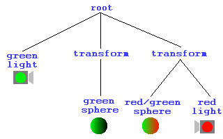

| Luz de mi Vida |
Este capítulo te lo dirá todo acerca de cómo iluminar tus escenas. Hasta el momento hemos dejado la iluminación por defecto (esto es, ninguna). La headlight establecida por defecto es TRUE, de modo que iluminamos nuestras escenas por una especie de faros de coche. Esto se acabó. Desde ahora, tus mundos quedarán iluminados por un despliegue de efectos como no los has visto en la vida. Puede.
Iluminación en VRML
Lo primero que hay que decir es cómo funciona el modelo de iluminación del VRML. Todas las luces tienen los siguientes campos: color, ambientIntensity, e intensity. Cada luz tiene una intensidad (intensity) con un valor entre 0 y 1 que determina su brillo. también tiene una intensidad ambiental (ambient intensity), de nuevo entre 0 y 1, que determina cuanta luz contribuye al ambiente general de la escena. Por este motivo, cuantas más luces haya en la escena, más iluminado quedará el ambiente, lo que por otro lado es lógico. una luz de ambiente (Ambient) es aquella que luce en todas las superficies de las escena, simulando provenir de otros objetos. Cada luz tiene además un color asociado, que sorprendentemente es el color que emite. La luz directa emitida por su fuente es calculada con intensity * color. La luz ambiental que contribuye a la escena es ambientIntensity * color. Cada fuente de luz tiene además un área de efecto, así que recuerda mantener las proporciones de tus escenas. El método para hacer esto varia entre los diferentes tipos.
La mayoría de los navegadores VRML calculan la iluminación desde cada esquina hasta la cara, e interpolando las sombras entre esos vértices. Esto significa que si tienes una cara gigantesca con una fuente de luz en el medio, y sus esquinas están muy distantes, NO conseguirás un foco de luz en el centro, si no que quedará uniformemente oscura. Esto es algo muy importante que hay que tener en mente. Otro punto importante es que las caras sólo se iluminarán si poseen un nodo Material. Los objetos con texturas no serán afectados por la iluminación. Puedes crear texturas "pre-iluminadas" para conseguir este efecto. Otro detalle importante a recordar, es que por defecto los mundos VRML tienen el headlight del usuario en ON, con lo que iluminarán allá donde miren. Esto puede perjudicar seriamente el cuidado que pongas en la iluminación, así que recuerda quitarlo si lo consideras necesario. Esto se hace insertando la línea headlight FALSE dentro de un nodo NavigationInfo, tal y como se muestra en el código de abajo. Cubriremos este nodo en un capítulo posterior, pero por ahora, puedes incluirlo en tus archivos tal cual para eliminar la luz emitida por el usuario. Debe ir a la cabeza de la jerarquía el grafo de la escena, como WorldInfo. Volveremos a ello, no te preocupes.
NavigationInfo {
headlight FALSE
}Tienes más información del modelo de iluminación en la especificación de VRML, incluida en la página web de Vapourtech, aquí, pero con esto puede ser suficiente para que vayas tirando. Te sugiero que te leas la especificación del modelo de iluminación antes de que hagas nada particularmente avanzado.
DirectionalLight
Bien, pongámonos a trabajar. El primer nodo que cubriremos es DirectionalLight. Esta luz brilla desde una dirección uniformemente, como un haz de rayos paralelos. Da un efecto similar al del sol, donde todo es iluminado en la misma dirección. el nodo DirectionalLight no tiene una localización determinada en la escena, se limita a existir.
Ilumina todo aquello que sea child de su nodo padre, esto es, todo en su nivel jerárquico hacia abajo. Este ejemplo (código) muestra cómo funciona. Ambas esferas son iluminadas por una luz verde desde atrás, pero una, a la derecha, está además iluminada por una luz roja desde el frente. Esto es así por que la luz verde está en el nivel más alto de la jerarquía, así que lo ilumina todo. La luz roja está agrupada en el mismo nodo que la esfera que hace brillar. La otra esfera está en un nivel distinto en el grafo de la escena, de manera que no queda iluminada. El siguiente diagrama lo ilustra todo.

El nodo DirectionalLight tiene los campos básicos de intensity, color, y ambientIntensity. Tiene además un campo on cuyas valores varian de TRUE a FALSE, e indican si está o no encendido el foco. Tiene un campo direction, que es un vector que corresponde a la dirección hacia la que brilla. El valor por defecto es 0 0 -1, indicando que la luz apunta desde +Z hacia el origen descendiendo el eje -Z. La definición completa del DirectionalLight se muestra abajo.
DirectionalLight {
exposedField SFFloat ambientIntensity 0
exposedField SFColor color 1 1 1
exposedField SFVec3f direction 0 0 -1
exposedField SFFloat intensity 1
exposedField SFBool on TRUE
}
PointLight
Un PointLight es una luz que emana de un punto particular en el espacio, difundiendose uniformemente en todas direcciones. Distintamente al DirectionalLight, este nodo tiene una posición en el espacio, especificada en su campo location. Este es el punto a partir del cual la luz emanará. Hay un campo que determina su área de efecto, que es radius. El radio es la distancia máxima dentro de la cual un objeto podrá ser iluminado. Dentro de este radio, la intensidad de la luz será afectada por una constante de atenuación. Estos son 3 valores de coma flotante (almacenados como un SFVec3f) que afectan a la iluminación según la siguiente fórmula:
1 / (attenuation[0] + attenuation[1]*r + attenuation[2]*r2)
Esto significa que los 3 valores en el campo attenuation se usan como coeficientes en una fórmula cuadrada por la intensidad de la luz a una distancia r. Está en tus manos experimentar con este coeficiente. El valor por defecto, 1 0 0 , no ofrece atenuación, dando un límite claro al efecto de la luz. Para hacer descender la iluminación linealmente, debes tener una atenuación en la forma 0 x 0. Dejaré que experimentes, pero no sin dejarte antes un ejemplo (código). El grupo de esferas de la izquierda está iluminado por unas constantes de atenuación de 0 1 0, dando una atenuación linear. El de la derecha, tiene uan atenuación no linear de 0 0 1, provocando que la luz caiga en un r2 del camino. Recuerda que esto puede no verse correctamente en tu sistema, depende del sistema de render empleado por tu navegador. Direct3D parece que no soporta algunos efectos de iluminación, de modo que no te preocupes si no puedes verlo, son las limitaciones de tu navegador. Te aseguro que funciona. De verdad.
PointLight {
exposedField SFFloat ambientIntensity 0
exposedField SFVec3f attenuation 1 0 0
exposedField SFColor color 1 1 1
exposedField SFFloat intensity 1
exposedField SFVec3f location 0 0 0
exposedField SFBool on TRUE
exposedField SFFloat radius 100
}
SpotLight
El último nodo de iluminación es SpotLight. Éste define una luz de foco. Tiene todos los campos habituales de los nodos de iluminación. Además tiene los campos location, radius y attenuation . Y hacen exactamente lo mismo que hemos descrito anteriormente, dan una posición, un radio de acción y una atenuación dentro de ese radio para la fuente de luz. Además, tiene otros campos. SpotLight tiene también su posición determinada en el espacio, al igual que PointLight. eso si, dado que es un tipo de luz que ilumina en una dirección particular, igual que tiene location, tiene también un campo direction, que define la dirección hacia la que apunta.
Además podemos especificar el tamaño del foco producido por otros dos campos, beamWidth y cutOffAngle. Estos son ángulos, que definen cómo de ancha será la proyección del foco, y cuán rápido deja de iluminar sus límites. Date cuenta de que cutOffAngle no tiene nada que ver con attenuation. attenuation determina cómo cambia la luz en la dirección en la que brilla, y cutOffAngle determina como oscurece por los bordes del área iluminada. Por defecto, beamWidth es mayor que cutOffAngle, dando una apariencia afilada a los bordes del foco. Esto incrementa el trabajo de la representacion considerablemente. Este diagrama muestra como los campos beamWidth y cutOffAngle afectan la apareincia del área iluminada.
SpotLight {
exposedField SFFloat ambientIntensity 0
exposedField SFVec3f attenuation 1 0 0
exposedField SFFloat beamWidth 1.570796
exposedField SFColor color 1 1 1
exposedField SFFloat cutOffAngle 0.785398
exposedField SFVec3f direction 0 0 -1
exposedField SFFloat intensity 1
exposedField SFVec3f location 0 0 0
exposedField SFBool on TRUE
exposedField SFFloat radius 100
}
Cae la oscuridad
Es mejor recordar que si quieres cualquier tipo de efecto especial de luz en una superficie, como un foco con un borde suave, esa superficie debe estar compuesta por varios vértices y caras, dado que VRML ilumina a partir de los vértices. Esto es algo muy importante que debes recordar. Si tienes una luz iluminando una larga superficie, no conseguirás el efecto que buscas. Además, distintas librerías de render soportan atenuaciones de luz de maneras distintas, de manera que el efecto cambiará según el navegador.Lo importante es experimentar, si es posible, en navegadores distintos. ¡Hazlo! El próximo capítulo, cubriremos texturas avanzadas, ¡y seguiremos con la parte 3 y la animación!